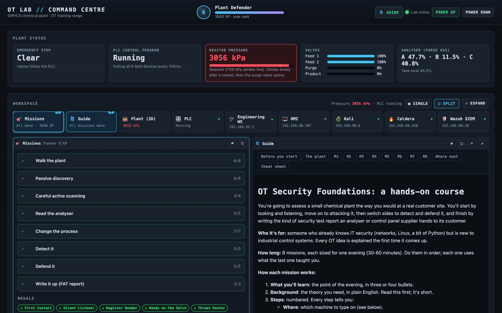
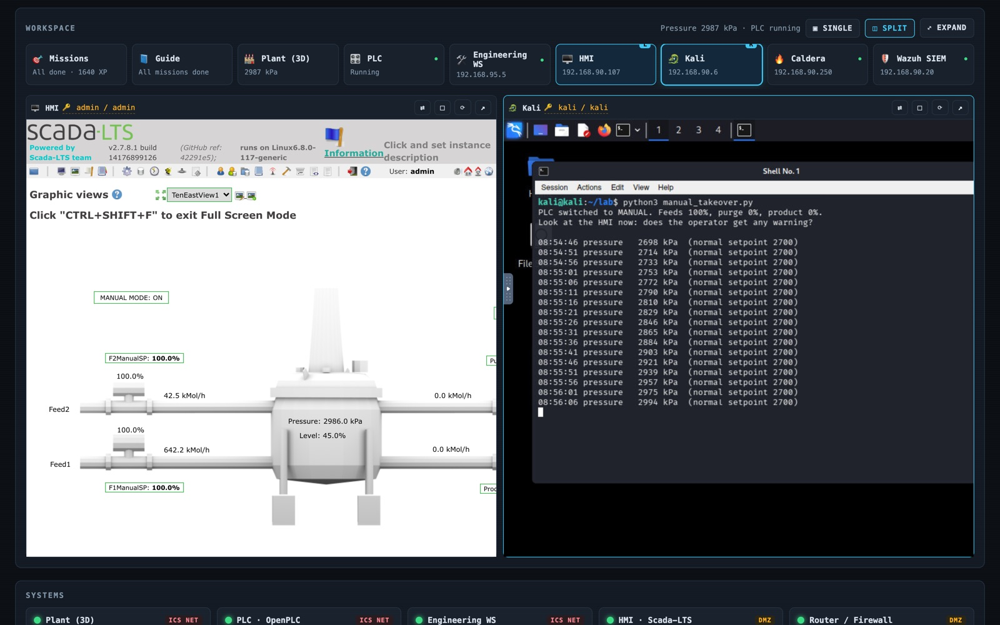
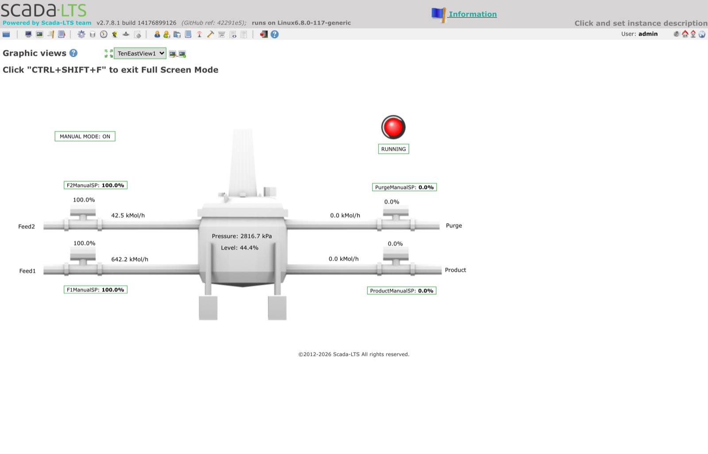

A simulated chemical plant, a real PLC, a Kali attacker and eight missions to learn OT security on a laptop.


I wanted to understand what is actually different about testing industrial systems, without a real plant to break. GRFICSv3 by Fortiphyd Logic gives you the plant: a simulated chemical reactor, an OpenPLC controller, a Scada-LTS operator screen, a firewall between zones, a Kali attacker, and Wazuh and Zeek watching it all. I built a layer on top that turns it into a guided course, with a single control panel to run it from.
Plant status. Emergency stop, PLC state, reactor pressure against its
setpoint, every valve position and the analyser reading, live. When something is wrong the
tile goes red and has a button to fix it.
Workspace. Every system in the lab runs inside the page. Pick any two and
they sit side by side, so you can watch the operator's screen while you attack from Kali,
or follow the guide while you type.
Systems. A light, login and restart button for each of the nine
containers, and a one-click reset back to factory defaults.
Missions. Objectives to tick, flag questions to answer, XP, ranks and
medals.
1. Walk the plant. The physical process, the HMI and the PLC, before touching anything.
2. Passive discovery. Read Zeek's Modbus logs and build an asset inventory without sending a packet.
3. Careful active scanning. Why scans crash PLCs, and how to scan one without doing it.
4. Read the analyser. Pull live process data over Modbus with no login at all.
5. Change the process. Switch the PLC to manual and drive the reactor pressure up while the operator's screen says everything is fine.
6. Detect it. Find the attack in Zeek and Wazuh.
7. Defend it. Firewall rules between the zones, then prove the attack no longer works.
8. Write it up. A one-page factory acceptance test (FAT) security report in IEC 62443-3-3 terms.
Every step says which machine to type on, what to type, what is happening behind the scenes and what you should see. The first version I wrote was too vague to follow, which is the most useful lesson I took from building it.

A shell script wraps Docker Compose, rebuilds Zeek's traffic mirror after every restart and copies the attack scripts into Kali. The Command Centre is a small Python server using only the standard library. It reads plant values from the simulator's own web endpoint rather than polling the PLC, so the dashboard never adds Modbus traffic to the logs you are analysing.
git clone https://github.com/CyberZombi3/ot-lab-command-centre.git ot-lab cd ot-lab ./lab.sh setup # downloads GRFICSv3 and its images ./lab.sh start # opens the Command Centre at localhost:4900
The lab is deliberately vulnerable, so the panel that drives it must not be. Everything binds to localhost. The HMI and Wazuh refuse to be framed, so two local relays strip that one header and nothing else, and they reject any Host that is not localhost. Buttons can only run a fixed list of actions, and every action needs a custom header that forces a CORS preflight the server never approves, so no other website can drive the lab from your browser.
Free and MIT licensed on GitHub. GRFICSv3 is downloaded separately from Fortiphyd and keeps its own licence; all credit for the plant goes to them. There is a write-up of building it on the blog.